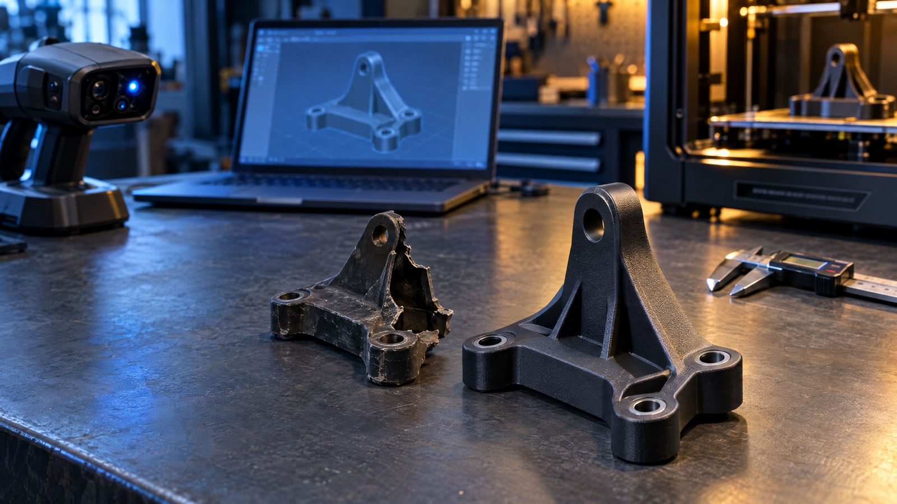

01 / Featured capability
3D Project
Development
From discontinued parts to custom components, we combine 3D scanning, CAD modeling and practical prototyping to move a hard-to-source idea toward a usable part.
- 3D scan & CAD
- Custom replacements
- Functional prototypes
- Automotive parts